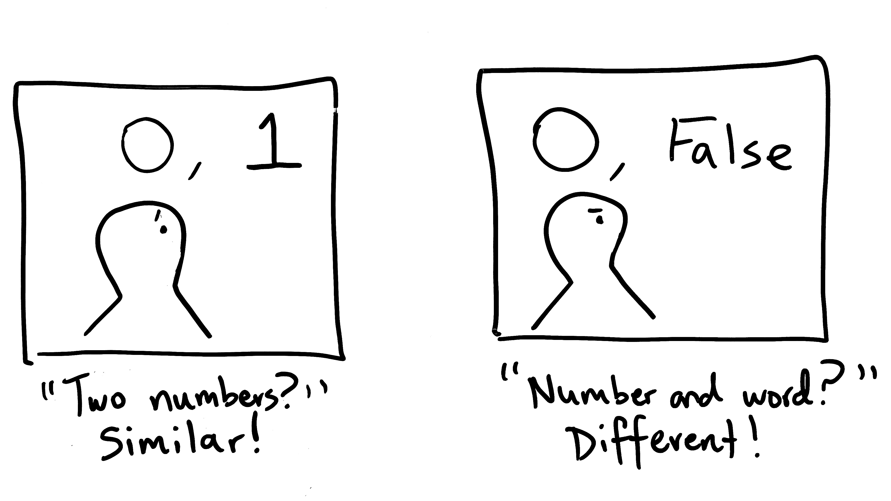

Categorical Thinking
"We think in categories.
But when you think in categories, you underestimate how different two facts are when they fall in the same category.
And you overestimate how different two facts are when there happens to be a boundary between them.
And when you pay attention to categorical boundaries, you fail to see big pictures." - Sapolsky, 2011
